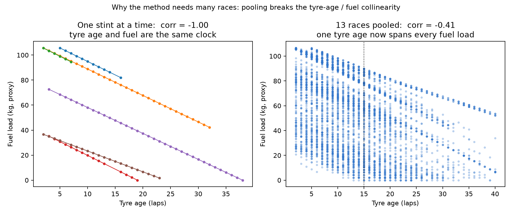
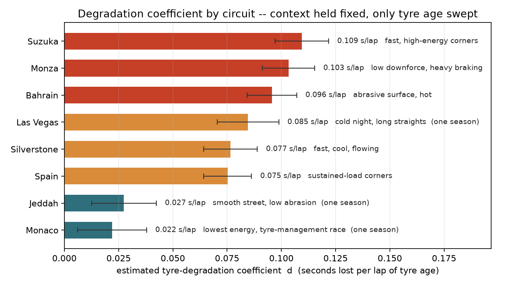
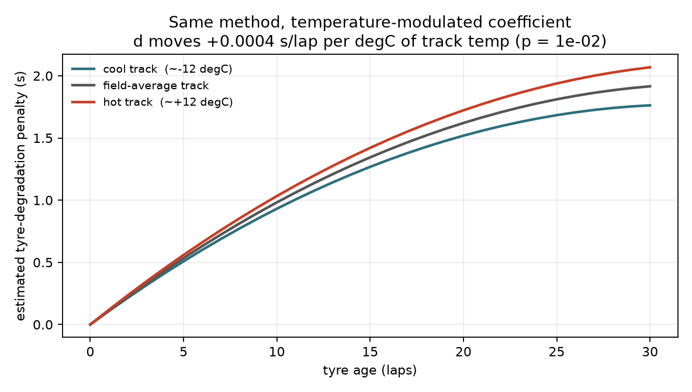

TrackShift '26 · idea submission · companion note
Lap time is the instrument.
Tyre degradation is the reading.
No sensor reports how much grip a tyre has lost, so we estimate it. We write lap time as a function of degradation plus everything else we can account for, invert that for the degradation coefficient, and check the result against lap times the model never saw.
+ d(circuit, compound, track_temp) × tyre_age ← the unknown
+ curvature × tyre_age²
+ fuel_effect + track_evolution + thermal
+ noise
Everything in teal
we can proxy from data or ground in the regulations. What is left over,
the coefficient d, is
tyre degradation. The counterfactual curve D(a) = d·a + curvature·a²
is that coefficient integrated over tyre age.
01 · the target
What we estimate, versus what we measure
The earlier note framed this as "lap time is a mixture". That is true, but it buries the point. Degradation is the estimand, the quantity we want a number for. Lap time is only the instrument we read it through, the same way a thermometer's column length is not the temperature.
Observed
Lap time per lap. Noisy, and moved by fuel, track state, temperature, traffic and driver as much as by the tyre.
Recovered
The degradation coefficient d in s/lap: how much pace the tyre alone sheds per lap of age, for a given circuit, compound and temperature.
This reframing sets the whole plan. The deliverable is not a lap-time predictor. It is a table of degradation coefficients and the curve each one implies. Lap time comes back only at the end, to reverse-validate: if the recovered d is right, it should predict the pace of stints in races the model was never trained on.
The course of the work: estimate d, then estimate how d changes with circuit, with compound, and with track temperature. Those coefficients are the product; the dashboard is how you read them.
02 · the method
Inversion: solve the lap-time equation for the coefficient
Within a single stint the estimator cannot work. Tyre age and fuel load are the same clock: both move one unit per lap, so no single stint can tell "tyre got slower" apart from "car got lighter". The correlation between them inside one stint is essentially −1.

Pooled across all 10,381 laps, ordinary least squares can attribute the
variance. Circuit baselines are absorbed as fixed effects so d is
estimated purely from within-race variation. Then the counterfactual:
hold circuit, compound, fuel, track evolution and temperature fixed, sweep
only tyre age, and read off D(a) = predicted(a) − predicted(0).
To check that the inversion is doing something real, watch d as each competing effect is moved out of its way:

03 · the inputs
What data we actually have to make the estimate
One data source, one build step. FastF1 pulls the official F1 timing feed and the F1 live weather stream (with historical results via Jolpica, the maintained successor to the Ergast API). We take race sessions from 13 Grands Prix across 2023–2024, keep only green-flag, dry, non-in/out laps, remove per-stint lap-time outliers, and store the result as a single Parquet file. Nothing downstream touches the network.
| Field | Source | Role in the estimator |
|---|---|---|
| Lap time (+ 3 sector times) | timing feed | the instrument; left-hand side of the equation |
| Compound, TyreLife, stint no. | FIA tyre data | the tyre state d multiplies |
| Track temp, air temp, humidity, wind, pressure, rainfall | F1 weather stream | thermal terms; rainfall used only to drop wet laps |
| Lap number, total laps | timing feed | drives the fuel-burn proxy |
| Track status, pit in/out | race control | lap filtering (green, racing laps only) |
| Position, speed-trap kph | timing feed | coarse dirty-air / traffic proxy |
Proxies we derive (not measured)
- FuelKg: a linear burn from a full tank at lap 1 to near-empty at the flag. It is a model calibrated to the regulations below, not a reading off the car.
- TrackEvoIdx: cumulative field-laps completed before this lap, normalised 0→1, as a stand-in for the rubbering-in of the surface.
- Thermal delta: track temp minus air temp.
What we do not have, and where it goes in the error term
Real fuel load
Only the linear proxy. The estimator calibrates around it.
Tyre pressures & temps
Blanket temps, running pressures and carcass temp are all unobserved.
Compound sub-spec
We see HARD/MEDIUM/SOFT, not which of Pirelli's C1–C5 that meant that weekend.
ERS deployment
No battery state or deploy maps.
Exact gaps / dirty air
Position is a blunt substitute until interval telemetry is loaded.
Driver inputs
Throttle, brake, steering traces not in this build (telemetry off for speed).
04 · the grounding
The priors we lean on come from the rulebook
Two of the biggest non-tyre effects, fuel mass and why stints end where they do, are pinned by regulation rather than guessed.
Fuel mass and its lap-time cost
A car may carry at most 110 kg of fuel for a race under the current Technical Regulations; teams start lighter and burn down to near-empty by the flag. The widely used engineering rule of thumb is that each kilogram of fuel costs roughly 0.03 s/lap, closer to 0.02 s/kg at fast, low-drag circuits and 0.04 s/kg at slow, brake-heavy ones. Our build uses a 110 kg → 0 linear burn and the 0.03 s/kg figure as a prior; the regression is then given only a lap-count proxy and recovers 0.030 s/kg on its own, a 1.01 ratio to the prior. The data reproduces a number we did not feed it.
Tyre allocation: why stints are the length they are
Each driver gets 13 sets of dry tyres per event across three nominated compounds (C1–C5 range), and must use at least two different specifications during a dry race (2024 Sporting Regulations, Art. 30.5). Stints therefore end for strategic reasons, not only when the tyre is spent: the mandatory second compound, the undercut, a safety car. That selection is a real bias, since soft-tyre stints in our data are cut short before the compound falls off the cliff, which is why the raw per-compound coefficients below read counter-intuitively.
Why the coefficient will need re-fitting for 2026
The 2026 rules cut race fuel to about 70 kg of 100% sustainable fuel, shift the power split toward ~50% electrical (350 kW MGU-K), and bring a new Pirelli tyre generation on narrower rims. Every term in the equation moves: lighter cars, a different fuel-burn curve, new tyre construction. The method carries over; the fitted numbers do not.
05 · the reading
The degradation coefficient, circuit by circuit
Fit d separately for each circuit, with fuel, curvature, track evolution and compound held around it. This is the core output: a number, in seconds per lap, for how fast the tyre bleeds pace at each track.

The estimator was never told which circuits are abrasive or high-energy. It recovered a 4× spread in degradation rate from lap times alone, and the spread lines up with what tyre engineers already know about these tracks. That agreement is the first sign the coefficient is measuring the tyre and not an artefact.
Per compound, with a caveat
| Compound | d (s/lap) | reading |
|---|---|---|
| Hard | +0.122 | run long, so the full decay is visible |
| Medium | +0.113 | the reference compound |
| Soft | +0.105 | pitted early (Art. 30.5), so the cliff is cut off in the data |
Taken at face value this says softs degrade slowest, which is wrong. It is the selection effect from the two-compound rule: soft stints end before the compound collapses, so the data never sees their worst laps. Per-compound coefficients need a stint-censoring correction, so we note them as a known limitation rather than report them as a finding.
06 · modulation
How the coefficient moves with temperature
Add one interaction term, tyre age × track temperature, and the estimator returns how much hotter tarmac steepens degradation.

Other weather terms the same fit returns
| Term | Estimate | 95% CI | note |
|---|---|---|---|
| Air temp | +0.196 s/°C | [0.178, 0.215] | hotter air → less engine & aero density → slower |
| Humidity | +0.024 s/% | [0.018, 0.030] | small, stable across fits |
| Wind speed | −0.105 s/(km/h) | [−0.138, −0.071] | direction-dependent; sign is circuit-specific |
| Track temp | −0.004 s/°C | [−0.012, +0.004] | not separately identified once air temp is in |
Track and air temperature are strongly correlated, so the model cannot cleanly split them. What we can safely say is that the thermal environment costs about 0.2 s/°C and steepens tyre degradation slightly; a precise per-source breakdown is not available from this data.
07 · reverse validation
Lap time comes back to check the estimate
The test: refit with one whole race held out, predict that race's degradation curve from the other twelve, and compare against the actual fuel-corrected stint pace, taken as the median over every fresh stint of that compound.

The read: a global coefficient gets the shape of degradation right on unseen races, and the level right where the circuit sits near the field average, but it runs high on low-deg tracks. That is the argument for moving to the per-circuit coefficients in section 05.
On raw held-out lap-time error the interpretable model is deliberately modest: the context terms cut MAE about 6% (1.51 → 1.43 s), because lap-to-lap scatter dominates absolute time. A flexible gradient-boosted model on the same features, scored on circuit-normalised pace, cuts held-out error 43–47% against the naive tyre-age model. We keep the interpretable model because its coefficients can be read directly; the flexible model is there to confirm the signal is real and usable.
08 · the demo
The dashboard runs on these coefficients
The Streamlit app is the coefficient table made interactive. Every control maps to a term in the equation:
| Control | What it changes |
|---|---|
| Circuit | selects the per-circuit baseline and degradation coefficient d |
| Compound | selects the compound offset |
| Track temperature | applies the temperature modulation of d (section 06) |
| Tyre age | the sweep variable; reads D(a) off the counterfactual curve |
The output is a single number, the tyre penalty at this age in seconds versus a fresh tyre in identical conditions, plus the full curve. It is the same inversion as this document, wrapped in four sliders.
python -m src.build_dataset # FastF1 -> data/stints.parquet (once, networked) python -m src.regression # the OLS pace model + fuel-prior check python -m src.degradation # per-circuit + temperature coefficients, the two figures python -m src.deck_figures # the narrative figures streamlit run app.py # the dashboard
09 · what it's for
From "how fast?" to "why?"
Once degradation is a number you can read per circuit, compound and temperature:
Tyre intelligence
How much performance has this tyre actually lost, right now?
Degradation forecasting
Given the coefficient and the curvature, how quickly will it lose more?
Race strategy
When does the accumulating cost of staying out exceed the ~20 s of a pit stop?
Driver & car analysis
Is a stint's pace loss the tyre, or is it operational?
Condition analysis
How does a compound respond as the track heats through an afternoon?
Post-race review
Predicted coefficient versus what the stint actually did.
Where the method goes next
- Per-circuit and censoring-corrected compound coefficients as the standard output, in place of a single global rate.
- Load real telemetry: gaps for dirty air, throttle traces for driver management, so those effects leave the noise term.
- Temporal models (LSTM/GRU) for within-stint tyre state, then multimodal signals (onboard video: visible locking, sliding) and physics-informed constraints so the curve obeys known tyre behaviour. This is a later extension, not part of the initial claim.
Limitations
FuelKgis a lap-count proxy calibrated to a published rule of thumb, not a measurement.- Per-compound coefficients carry the two-compound-rule selection bias (section 05).
- Jeddah, Monaco and Las Vegas appear in one season only, so their coefficients cannot be cross-validated yet.
- Track evolution and thermal terms are only partly identified; their effect on d is real but their point estimates are soft.
- A global coefficient over-predicts degradation on low-deg circuits until per-circuit slopes are the default.